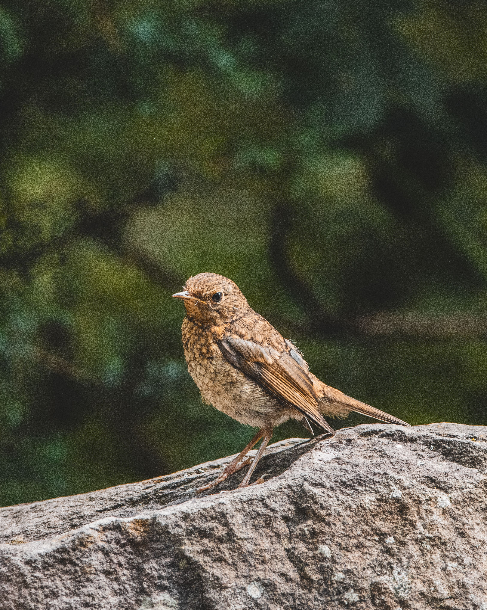

The Common Nightingale is a relatively plain brown songbird whose extraordinary vocal ability has made it one of Europe's most famous songbirds. It has warm brown upperparts, a reddish-brown tail, and pale underparts, with little of the bright plumage associated with many other European songbirds. Nightingales prefer dense scrub, woodland edges, hedgerows, river valleys, and other habitats with thick vegetation close to the ground. Males are famous for singing both during the day and at night during the breeding season, often from concealed positions. Compared with the European Robin, the Nightingale lacks the robin's orange-red breast and has a more reddish-brown tail. It is also much more difficult to see than the similarly sized robin because it spends much of its time hidden in dense vegetation. The species migrates between Europe and sub-Saharan Africa, making its long-distance seasonal movements an important part of its life cycle.